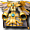

威奇哥貢
威奇哥貢
我們伺服器實際的怪物設定（不是日版 wiki 的資料）。
能力值
| 項目 | 本伺服器 | 日版 wiki |
| 等級 | 95 | - |
| HP | 23000～27000 | - |
| AC | 15 | - |
| MC | 40 | - |
| AAR | 30 | - |
| SAR | 30 | - |
| STR | 85 | - |
| DEX | 21 | - |
| INT | 21 | - |
| WIS | 21 | - |
| CON | 115 | - |
| 經驗值 | 141000 | - |
| 名聲值 | 500 | - |
| 金錢 | 13200 | - |
| 攻擊屬性 | 隨機 | - |
| 防禦屬性 | 隨機 | - |
出現地圖
| 地圖 | 數量 | 出現位置 |
| 胡桃鉗第1-5區 | 5 | 範圍 (16,66)-(105,66) |
| 胡桃鉗第2-5區 | 5 | 範圍 (16,66)-(105,66) |
掉落物品
| 道具 | 基本機率 |
 魔斯酒 魔斯酒 | 3% |
 毀滅爆波斬 毀滅爆波斬 | 0.8% |
 騎士之譽 騎士之譽 | 1% |
 塞雷西斯彎刀 塞雷西斯彎刀 | 0.05% |
 琉璃石 琉璃石 | 0.4% |
 紫水晶 紫水晶 | 0.4% |
 綠寶石 綠寶石 | 0.4% |
 血石 血石 | 0.4% |
 紅色石頭 紅色石頭 | 1% |
 染色劑製造法[金髮] 染色劑製造法[金髮] | 0.6% |
 狂風之戒 狂風之戒 | 0.15% |
 歐佩爾之緊身衣 歐佩爾之緊身衣 | 0.05% |
 歐佩爾之法衣 歐佩爾之法衣 | 0.05% |
 雙手格亨納之斧 雙手格亨納之斧 | 0.05% |
 莉希涅之女聖袍 | 0.05% |
 雙手克修倫之斧 雙手克修倫之斧 | 0.05% |
 單手克修倫之寶珠 單手克修倫之寶珠 | 0.05% |
 月弧 月弧 | 0.5% |
 天界之槍(雙手) 天界之槍(雙手) | 0.5% |
基本機率再乘上伺服器的掉寶倍率；「隨機一件」是從一組道具裡抽一件。